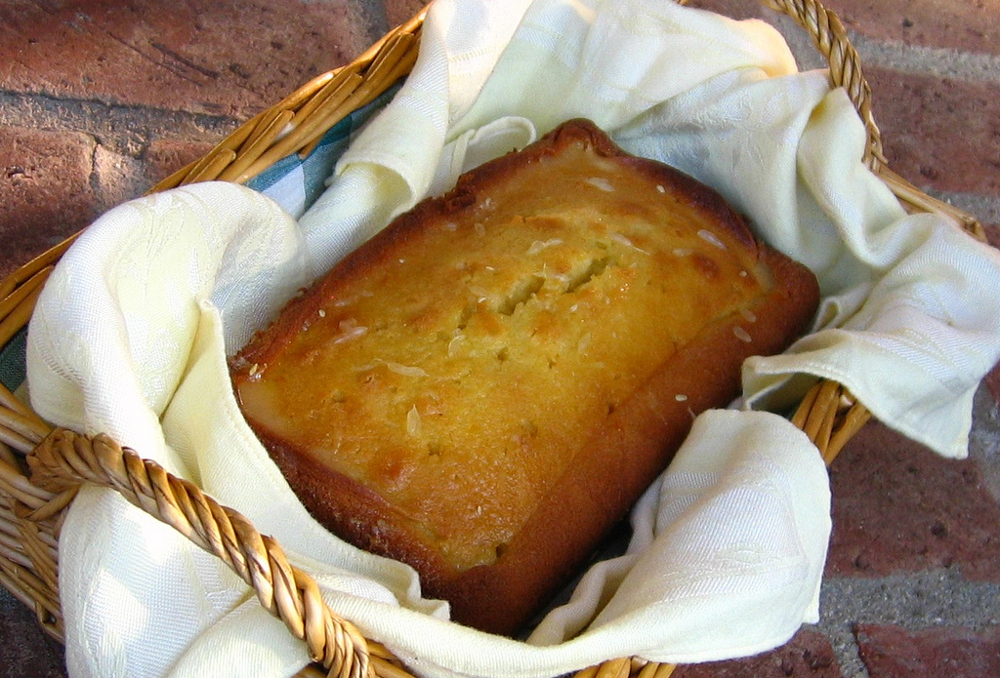
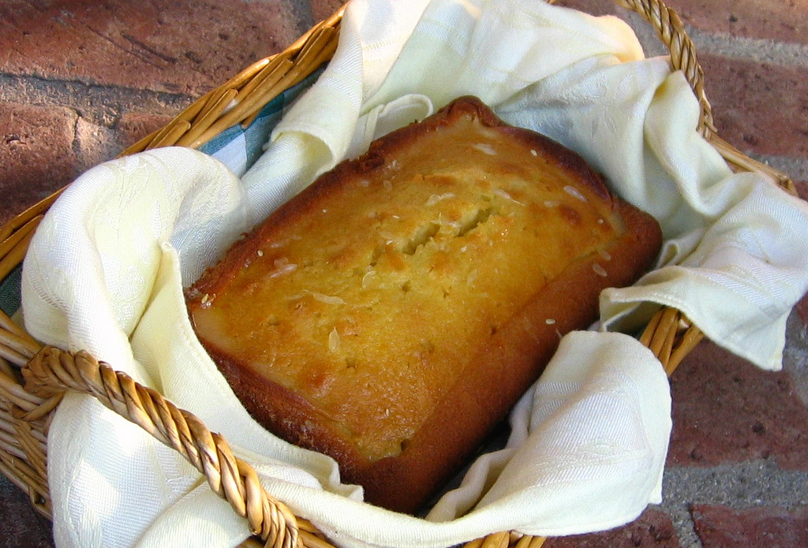

How To Make Cake
Welcome To my Page! This how to site will help you make Cake!
Cake is so fun to bake. I am so happy to show you the way to make cake.The experience of baking has been life changing for me. I hope you enjoy!
Cake is so fun to bake. I am so happy to show you the way to make cake.The experience of baking has been life changing for me. I hope you enjoy!
